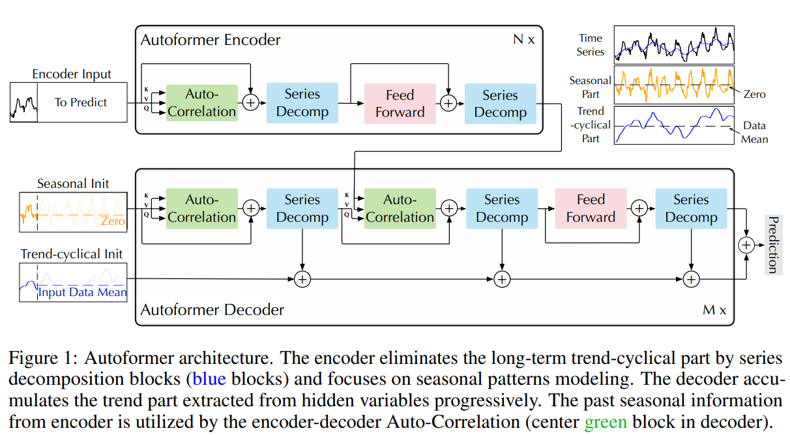
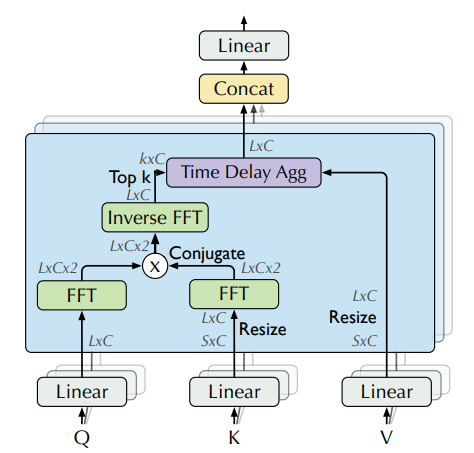
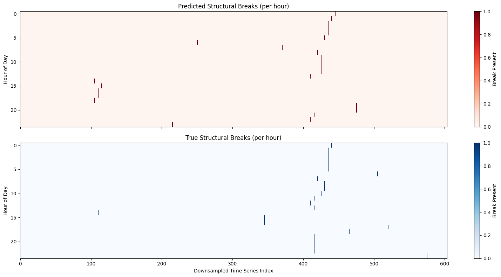
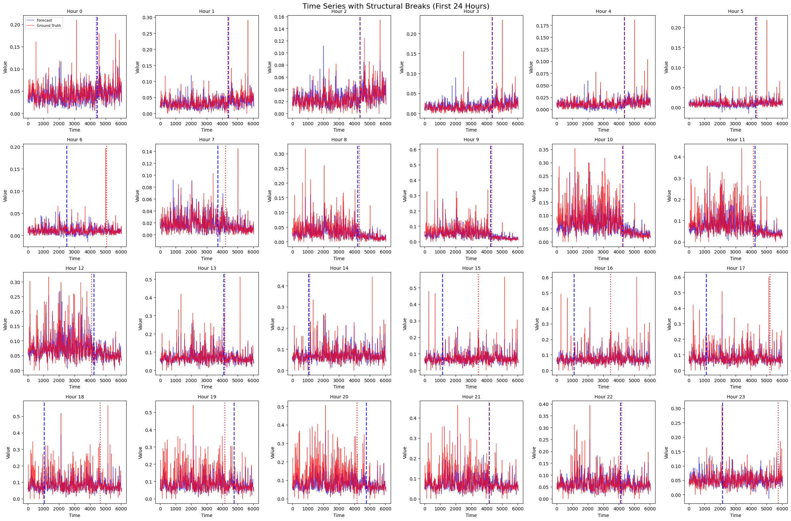
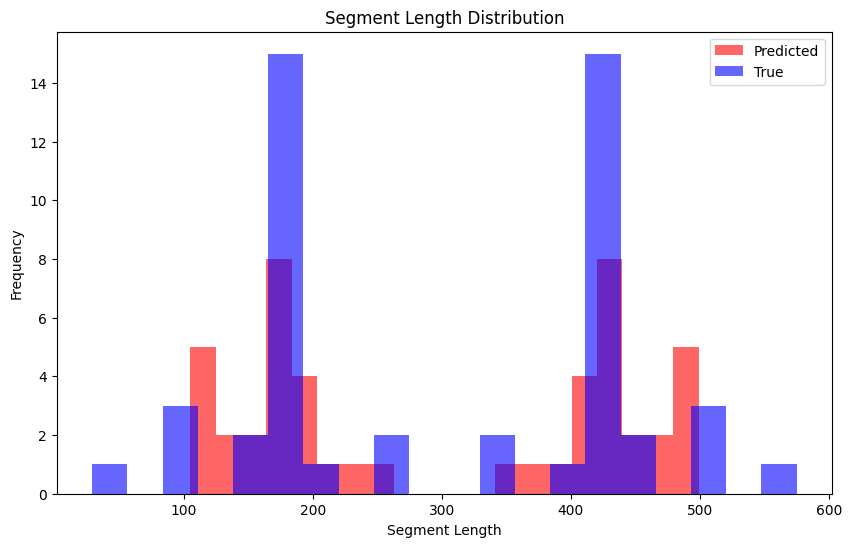
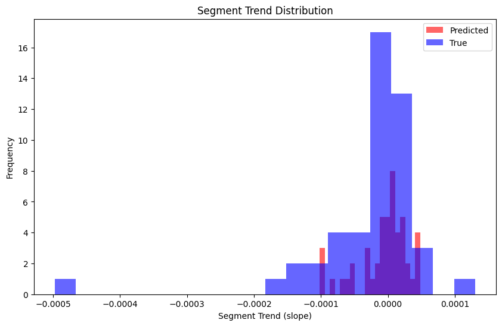
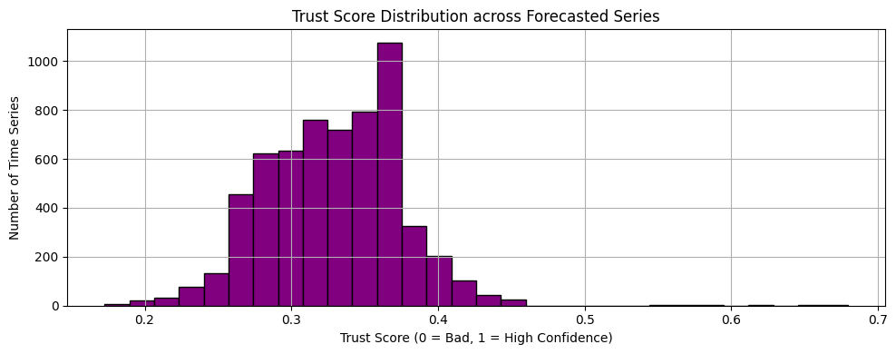

01 / The question
What does an accurate forecast preserve?
Forecast evaluation often starts with a single number: how far are the predictions from the observations? That is a useful question. But when a forecast feeds into an analysis of changing demand, stability, or trends, we also care about the patterns it preserves.
Two forecasts can have similar average errors and behave differently around transitions. One may smooth over a change; another may place it too early. A score that averages across series and horizons can conceal those differences.
In this project, I examine a pretrained Autoformer on hourly traffic data through several complementary views: scaled forecast error, detected breaks, segment lengths and slopes, and statistical tests on forecast samples. The aim is to make the evaluation more informative about what a model’s outputs can support.
Central observation
The saved run reports a mean MASE of 0.849. Yet matching the number of detected breaks does not guarantee matching their locations, and a composite statistical score needs careful interpretation before it can say anything about reliability.
02 / The model
Decompose the series, then look for recurring delays
Autoformer brings two ideas from time-series analysis into a Transformer architecture: a moving-average decomposition and an Auto-Correlation mechanism. Decomposition separates a slowly varying component from the remainder. Repeating this operation inside the network lets the model progressively separate different patterns.
The remainder is called the seasonal component in the architecture, but subtracting a moving average does not isolate pure seasonality: shorter fluctuations and noise can remain. The decoder accumulates extracted trend components while processing the seasonal representation.


The second idea is to aggregate information at useful time delays. Ordinary self-attention connects individual positions. Auto-Correlation estimates which shifts align query and key patterns, selects strong delays, and combines shifted value sequences using normalized weights.
FFT operations make the correlation calculation efficient: transform queries and keys, multiply one transform by the complex conjugate of the other, and transform back to obtain scores over delays. The selected delays then guide aggregation in the sequence domain. This gives the model a way to reuse recurring patterns.


Architecture background: Wu et al., Autoformer. The forecasting experiment below uses an existing pretrained checkpoint.
03 / The evaluation
One forecast tensor, several questions
The evaluation loads the GluonTS traffic dataset and the kashif/autoformer-traffic-hourly checkpoint. The saved notebook contains 6,034 forecast entries, with 100 sampled future trajectories and a 24-step horizon for each entry.
- Forecast entries
- 6,034
- Samples / entry
- 100
- Forecast steps
- 24
- Mean MASE
- 0.849
These are series/window entries: the pipeline describes 862 series evaluated over seven rolling windows. They are not 6,034 independent sensors. The different analyses also summarize the sample dimension differently.
- Forecast accuracy
- The sample median at each horizon is compared with observed values using mean absolute scaled error (MASE).
- Break analysis
- The sample mean is computed first. Every tenth forecast entry and its corresponding observation are retained before segmentation.
- Statistical tests
- Normality and variance tests operate on forecast samples; the autocorrelation test operates on the 24-step mean forecast.
MASE divides forecast MAE by the mean absolute seasonal-naive differences in the historical data. The reported average of 0.849 is below that scaling reference. It does not establish that every series performs well, or that Autoformer beats a separately evaluated seasonal-naive forecast on the same test windows.
Numbers are from the saved evaluation notebook; the procedure is in eval_pipeline.py. This article analyzes that recorded run rather than reporting a new experiment.
04 / Structural comparison
The same number of breaks, in different places
A structural break describes a change in a process, such as a shift in its mean. Here, the analysis applies binary segmentation with an L2 cost to both forecast and observed values. This cost favors segments whose values stay close to their segment mean.
For each forecast horizon, the implementation considers one through five breakpoints and minimizes a penalized cost:
The repository calls this BIC selection. More precisely, it is a BIC-style penalty added to raw squared error; its balance depends on the scale of the signal. Also, zero breaks is not a candidate, so the procedure is required to select at least one.
How to read the axes
Each column below is a downsampled series/window entry. Each row is a forecast step. The code segments across entries at a fixed horizon, so these figures describe the ordering of a collection of forecasts—not a continuous timeline for one sensor.


The notebook reports 24 predicted and 24 observed breaks, with one at every horizon. Some locations line up closely, particularly in several early horizons. Others differ substantially, including horizons 6 and 15–18. Agreement in total count therefore hides differences in placement.
Because every row selects the minimum allowed count, the result is not evidence that the forecasts detect too many breaks. A stronger comparison would allow an unbroken signal and examine how location agreement changes with the penalty and entry ordering.


Implementation and candidate range: stats.py. Plot construction and axes: visualisations.py.
05 / Segment analysis
What happens between the boundaries?
Break locations determine the groups of values assigned to each segment. Comparing their lengths and fitted slopes gives another view of how the forecast and observation arrays differ.


The observed lengths concentrate around roughly 180 and 420 entries, while the forecast distribution spreads differently around those groups. These paired concentrations are related: moving a single boundary makes one segment longer and the other shorter. The plot reveals different boundary placements; it does not independently establish shorter-lived temporal regimes.


Both slope distributions concentrate near zero. In this figure, the observations have the more extreme tails, including a negative slope near −0.0005. The central overlap suggests some similarity in local shape across the ordered entries, but near-zero slopes alone do not establish stationarity or mean reversion.
The figures are reproduced as saved in the repository. Interpretations here follow the displayed distributions and the segment-analysis implementation.
06 / Statistical diagnostics
Unpacking the “trust score”
The repository also combines three statistical diagnostics into a score between zero and one. Understanding it requires looking at both the test and the object being tested.
| Diagnostic | What is tested | Score component |
|---|---|---|
| Shapiro–Wilk | 100 forecast samples at each of the 24 horizons | Fraction of horizons with p > 0.05 |
| Levene | Sample distributions at each adjacent pair of horizons | Fraction of 23 pairs with p > 0.05 |
| Ljung–Box | The 24-step mean forecast, using lag 10 | 1 if p > 0.05; otherwise 0 |


The distribution peaks around 0.37. This is a descriptive summary of test outcomes. It is not a 37% probability that a forecast is correct, and it does not directly count how many of three assumptions a series satisfies: two components are fractions over multiple tests, while the third is binary.
These tests also operate on forecast samples and levels, not forecast residuals. A forecast that captures seasonality can be autocorrelated for a good reason. Non-normal predictive samples or changing uncertainty across the horizon need not indicate a bad forecast. The relevant assumptions depend on the downstream method.
A more targeted extension would inspect errors against observations, evaluate predictive-interval coverage, and report the three components separately. Failure to reject a null hypothesis at 0.05 is not proof that the null is true; sample size and test power also shape the result. The implementation additionally assigns zero when a test raises an exception, so numerical failures should be separated from statistical findings.
Exact score construction: analyze_series and trust_score in stats.py.
07 / Findings & next steps
Evaluate the claim you want to make
- Average error is one part of the evaluation. The saved run’s MASE of 0.849 summarizes scaled point-forecast accuracy. It does not measure agreement in break locations, predictive uncertainty, or suitability for a downstream statistical analysis.
- Counts can conceal structural differences. Both arrays yield one break per horizon, while the locations sometimes diverge markedly. The candidate range and the axis being segmented are essential to interpreting that result.
- Segment statistics need a meaningful ordering. Lengths and slopes describe the current series/window index. Claims about temporal regime duration would require segmentation along each sensor’s chronology.
- A diagnostic score needs a defined purpose. Combining test outcomes is convenient, but reliability requires a relationship to observed forecast errors, calibration, or a specified downstream task.
The next experiment would preserve each series’ time axis, include a zero-break model, and test sensitivity to segmentation settings. Comparing Autoformer with seasonal-naive, autoregressive, and recurrent baselines under the same procedure would help establish which patterns are model-specific. Those comparisons are not established by the Autoformer run presented here.
Conclusion
Forecast evaluation becomes more useful when every statistic is tied to a clear question. Error, boundary placement, segment behavior, and predictive diagnostics each reveal something different—and each needs an interpretation that matches the data and procedure behind it.
08 / Sources
Explore the analysis
This article revisits the project’s June 2025 analysis, using the README, saved notebook outputs, implementation, and original images. It focuses on the documented Autoformer experiment.
- Project READMEMotivation, architecture notes, and original discussion.
- Evaluation notebookRecorded traffic-dataset run, MASE, tensor shapes, and break counts.
- Forecasting and evaluation pipelineCheckpoint, data loading, sample aggregation, and MASE calculation.
- Statistical analysis and visualizationsSegmentation, penalties, statistical tests, and figure construction.
- Autoformer: Decomposition Transformers with Auto-Correlation for Long-Term Series ForecastingHaixu Wu, Jiehui Xu, Jianmin Wang, and Mingsheng Long (2021). Original architecture paper.
Repository references are pinned to revision eb46a63. All seven figure files are served locally with this article.